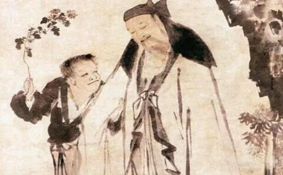

佛
关于“如见文殊，但睹老人”，下面不妨介绍一个公案：
《
华严宗初祖杜顺和尚是文殊菩萨化身，他晚年的时候，有一个弟子，亲近了他很久了，却不知道他的伟大。有一天这个弟子告假，说要去朝五台山礼文殊菩萨，杜顺和尚就赠给他一首偈颂：“游子漫波波，台山礼土坡，文殊只这是，何处觅弥陀！”但他的弟子没有明白其中的深意。后来这位弟子来到五台山脚碰到一个老人，这个老人告诉他说：“文殊菩萨在终南山，就是你的师父杜顺和尚。”这个弟子赶快跑回去，但是他的师父杜顺和尚已经于十一月十五日坐亡了。现在关中还是把这一天作为文殊菩萨的斋日。所以“不具眼识人”，即使在善知识面前，也不认得他就是善知识。
《虚老和尚参禅要旨》里只是简单提了一下这个公案，下面再作详细介绍：
杜顺和尚是华严初祖、文殊菩萨的化身，他特别强调劝人念阿弥陀佛，求生
杜顺和尚晚年的时候，有一个跟他
他的师父杜顺和尚就对他讲：“你没必要去，在这里修行和到五台山拜文殊菩萨是一样的。”其实他的师父就是文殊菩萨，但这个弟子不明白，一再恳求：“我已经发愿朝山了，请你老人家慈悲，了我的心愿吧！”杜顺和尚看他心意已决，就只能同意了。对善知识来说，如果弟子心意已决，说了两回也没用，那就只能由他，否则弟子会有很大过失。
临行的时候，杜顺和尚交给这个弟子两封信，一封给青娘子，一封给猪老母，叫他顺便按地址送去。于是这个弟子马上启程，按信上的地址去打听，找到了青娘子。想不到青娘子是一个妓女，他心里怀疑就自己的师父，怎么还有个当妓女的朋友呢？这说明他对自己的师父没有信心，还有疑惑。但是既然地址没有错，就把信交给了她。没想到这个妓女接过信，拆开一看，说：“知道了，我工作已经完了，现在该走了。”说完就马上坐着圆寂了。这个弟子觉得很奇怪，就把这封信捡起来，看见信上写的是：“观音，我现在事情办完要走了，你也跟我走吧！”原来青娘子其实就是
但是这时候弟子还是没有醒悟过来，他做梦也想不到自己的师父就是文殊菩萨，所以还是继续赶路，去五台山朝拜。在路上，他按第二封信的地址找到了猪老母，原来就一头猪。猪老母接到信之后，用鼻子一拱，就知道里面写的是什么，于是也当场去世了。弟子又觉得奇怪，把信拿起来一看，上面写的是：“普贤，我现在事情办完要走了，你也跟我走吧！”原来这头猪就是
在五台山脚下，这位弟子碰到一个老人，老人问：“你到五台山来做什么呀？”他回答：“来朝拜文殊菩萨。”老人说：“你师父就是文殊菩萨，你不拜你师父，千里迢迢来拜文殊，真是舍近求远！”说完就突然不见了。
这位弟子这时才恍然大悟，总算醒悟过来了，就马上回去拜见自己的师父。但是古代的时候走路要走很久，当他回到了原来师父的住处，师父杜顺和尚已经圆寂很长时间了。
可见，如果人没有信心，即使自己的师父就是文殊菩萨，十几年也是当面不识，还要舍近求远。而赶回来的时候，师父已经圆寂了，这是非常可悲的！这是文殊菩萨化身杜顺和尚的公案。
摘自仁禅法师《
原文标题：为何我们和佛总是“若逢不逢，或见非见”？
文章转自微信公众号：净土解行